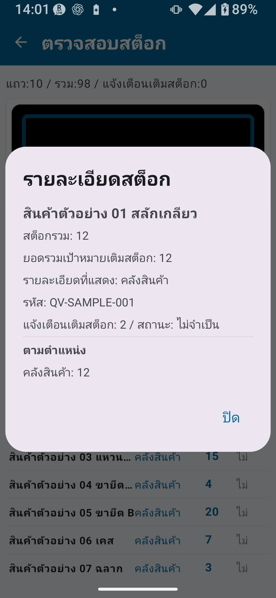

ภาพรวมการจัดการสต็อกเวอร์ชันฟรี
การจัดการสต็อกติดตามการรับเข้า การจ่ายออก และการโอนย้ายสินค้า เพื่อให้เห็นภาพระดับสต็อกปัจจุบันได้อย่างถูกต้อง เวอร์ชันฟรีช่วยให้คุณทดลองใช้การตรวจสอบสต็อกขั้นพื้นฐานและการใช้งานทะเบียนสินค้าเบื้องต้นได้
หน้าจอหลักในการจัดการสต็อก: ตรวจสอบสต็อก / รับเข้า / จ่ายออก / โอนย้ายสต็อก / ประวัติสต็อก / นำเข้าและส่งออกข้อมูล

ข้อจำกัดของเวอร์ชันฟรี
| รายการ | ข้อจำกัดของเวอร์ชันฟรี | วิธีปลดข้อจำกัด |
|---|---|---|
| รายการทะเบียน | สูงสุด 30 รายการ | การจัดการสต็อกมาตรฐานขึ้นไป |
| รายการประวัติสต็อก | สูงสุด 30 รายการ | การจัดการสต็อกมาตรฐานขึ้นไป |
| รายการที่ส่งออก | สูงสุด 30 รายการ | การจัดการสต็อกมาตรฐานขึ้นไป |
| การลงทะเบียนในทะเบียนตำแหน่ง | ใช้งานไม่ได้หรือมีข้อจำกัด | การจัดการสต็อกมาตรฐานขึ้นไป |
| การแก้ไขยอดรวมสะสมที่บันทึกไว้โดยตรง | ใช้งานไม่ได้ | การจัดการสต็อกครบวงจร |
| กฎรหัส/ตำแหน่งแบบละเอียด | ใช้งานไม่ได้ | การจัดการสต็อกครบวงจร |
| การนำเข้า/ส่งออก CSV แบบขยาย | จำกัดทั้งรายการและฟีเจอร์ | การจัดการสต็อกครบวงจร |
การตรวจสอบสต็อก
หน้าจอตรวจสอบสต็อกจะแสดงยอดสต็อกรวมแยกตามสินค้าในตอนแรก การประเมินการเติมสต็อกจะคำนวณจากยอดสต็อกรวมของทุกตำแหน่งที่เปิดใช้ “รวมในการประเมินการเติมสต็อก” ในทะเบียนตำแหน่ง

สิ่งที่ทำได้ในหน้าจอตรวจสอบสต็อก
- ดูยอดสต็อกรวมปัจจุบันของสินค้าแต่ละรายการ
- ค้นหาหรือกรองตามชื่อสินค้าหรือรหัสสินค้า
- เปรียบเทียบจุดสั่งซื้อซ้ำกับยอดรวมของตำแหน่งที่รวมในการตรวจสอบ เพื่อระบุสินค้าที่ควรเติมสต็อก
- แตะสินค้าเพื่อขยายดูรายละเอียดแยกตามตำแหน่ง ในมุมมองแยกตามตำแหน่ง ระบบจะไม่แสดงการประเมินการเติมสต็อก หรือถือว่าไม่ทำงาน
ขั้นตอนการตรวจสอบสต็อก
- จากหน้าหลัก แตะ การจัดการสต็อก
- เปิด ตรวจสอบสต็อก
- ค้นหาสินค้าที่ต้องการตรวจสอบ โดยใช้การค้นหาหรือเลื่อนดูรายการ
- แตะสินค้าเพื่อดูรายละเอียดสต็อก
รายละเอียดสต็อก
การแตะสินค้าในหน้าจอตรวจสอบสต็อกจะเปิดหน้าจอรายละเอียดสต็อก

สิ่งที่ดูได้ในรายละเอียดสต็อก
- รหัสสินค้าและชื่อสินค้า
- จำนวนสต็อกรวม
- รายละเอียดสต็อกแยกตามตำแหน่ง
- จุดสั่งซื้อซ้ำและราคา หากลงทะเบียนไว้ในทะเบียนสินค้า
- หมวดหมู่
ความสัมพันธ์กับข้อมูลทะเบียน
การจัดการสต็อกทำงานร่วมกับทะเบียนสินค้า ทะเบียนหมวดหมู่ และทะเบียนตำแหน่ง การเก็บข้อมูลทะเบียนให้ถูกต้องช่วยเพิ่มคุณภาพของบันทึกสต็อก
| ทะเบียน | บทบาทหลัก | ฟิลด์สำคัญ |
|---|---|---|
| ทะเบียนสินค้า | ลงทะเบียนสินค้าที่มีสต็อกจริง | รหัสสินค้า/บาร์โค้ด ชื่อสินค้า หมวดหมู่ ราคา จุดสั่งซื้อซ้ำ |
| ทะเบียนหมวดหมู่ | จัดการกลุ่มที่ใช้จำแนกสินค้า | รหัสหมวดหมู่ ชื่อหมวดหมู่ ลำดับการแสดง |
| ทะเบียนตำแหน่ง | จัดการตำแหน่งจัดเก็บ | รหัสตำแหน่ง ชื่อตำแหน่ง ลำดับการแสดง เปิดใช้งาน/ปิดใช้งาน |
ความพร้อมใช้งานของการรับเข้า การจ่ายออก และการโอนย้าย
ในเวอร์ชันฟรี ปุ่มเข้าสู่การรับเข้า การจ่ายออก และการโอนย้ายสต็อกอาจมองเห็นได้ แต่การบันทึกจริงและจำนวนรายการจะมีข้อจำกัด
คำแนะนำสำหรับการรับเข้า การจ่ายออก และการโอนย้ายในเวอร์ชันฟรี
- ปุ่มฟังก์ชันอาจมองเห็นได้
- เมื่อพยายามใช้งาน อาจมีข้อความแจ้งข้อจำกัดปรากฏขึ้น
- ทำตามคำแนะนำที่แสดงบนหน้าจอ
- เมื่อรับเข้าสินค้าด้วยรหัสสินค้าที่ยังไม่ได้ลงทะเบียน อาจมีข้อความให้สร้างรายการใหม่ในทะเบียนสินค้า
- ช่องสต็อกในหน้าจอจ่ายออกจะแสดงสต็อกปัจจุบันเพื่ออ้างอิง — ไม่ใช่ช่องสำหรับกรอกหรือแก้ไข
ข้อจำกัด CSV
เวอร์ชันฟรีจำกัดทั้งจำนวนรายการที่นำเข้าหรือส่งออกได้ และฟีเจอร์ที่ใช้งานได้
| รายการ | เวอร์ชันฟรี | ปลดล็อกมาตรฐาน | ปลดล็อกครบวงจร |
|---|---|---|---|
| รายการที่ส่งออก | สูงสุด 30 รายการ | สูงสุด 300 รายการ | ไม่จำกัด |
| รายการนำเข้า CSV | จำกัด | ขยาย | ขยาย |
| CSV สำรองข้อมูลครบถ้วน (ข้อมูลทั้งหมด) | จำกัด; ทำตามคำแนะนำในแอป | ขยาย | ○ |
สิ่งที่เวอร์ชันฟรีทำไม่ได้
| ฟีเจอร์ | แผนที่ต้องใช้ |
|---|---|
| รายการทะเบียนมากกว่า 30 รายการ | การจัดการสต็อกมาตรฐานขึ้นไป |
| รายการประวัติมากกว่า 30 รายการ | การจัดการสต็อกมาตรฐานขึ้นไป |
| ส่งออกมากกว่า 30 รายการ | การจัดการสต็อกมาตรฐานขึ้นไป |
| ล็อกการหมุนหน้าจอ | การจัดการสต็อกมาตรฐานขึ้นไป |
| การลงทะเบียนตำแหน่งแบบละเอียด | การจัดการสต็อกมาตรฐานขึ้นไป |
| การแก้ไขยอดรวมสะสมที่บันทึกไว้โดยตรง | การจัดการสต็อกครบวงจร |
| กฎรหัส/ตำแหน่งแบบละเอียด | การจัดการสต็อกครบวงจร |
| ส่งออก CSV แบบขยาย | การจัดการสต็อกครบวงจร |
| นำข้อมูลตรวจนับสต็อกไปใช้กับการจัดการสต็อก | การจัดการสต็อกครบวงจร |
ขั้นตอนการทำงานที่แนะนำสำหรับผู้ใช้เวอร์ชันฟรี
ใช้สำหรับตรวจสอบสต็อกเมื่อมีสินค้าจำนวนน้อย
หากมีสินค้าไม่เกิน 30 รายการ เวอร์ชันฟรีรองรับการตรวจสอบสต็อกอย่างต่อเนื่อง เหมาะสำหรับติดตามระดับสต็อกและตรวจสอบเทียบกับจุดสั่งซื้อซ้ำ
ฝึกใช้งานด้วยข้อมูลตัวอย่าง
สร้างข้อมูลตัวอย่างจากหน้าจอการตั้งค่า เพื่อเตรียมสินค้าและข้อมูลสต็อกสำหรับฝึกใช้งาน แนะนำให้ทำความคุ้นเคยกับขั้นตอนก่อนลงทะเบียนข้อมูลจริง
ส่งออก CSV เป็นประจำเพื่อเก็บบันทึก
ส่งออกเป็น CSV ขณะที่ยังอยู่ภายในขีดจำกัดส่งออก 30 รายการ แล้วเก็บสะสมบันทึกสต็อกไว้ในคอมพิวเตอร์หรือสเปรดชีต
วางแผนอัปเกรดเมื่อใกล้ถึงขีดจำกัด
เมื่อจำนวนสินค้าและประวัติใกล้ถึง 30 รายการ ให้พิจารณาอัปเกรดเป็นการจัดการสต็อกมาตรฐาน
- มีสินค้ามากกว่า 30 รายการ
- ต้องการเก็บประวัติการรับเข้าและจ่ายออกในระยะยาว
- ต้องการใช้ตำแหน่งแยกกัน เช่น คลังสินค้าและร้านค้า
📌 สรุปประเด็นสำคัญของบท
- การจัดการสต็อกบันทึกธุรกรรมประจำวัน เช่น รับเข้า จ่ายออก และโอนย้าย โดยเป็นคนละส่วนกับการตรวจนับสต็อก
- เวอร์ชันฟรีมีขีดจำกัด 30 รายการ สำหรับทะเบียน ประวัติ และการส่งออก จึงเหมาะกับการใช้งานขนาดเล็ก
- หน้าจอตรวจสอบสต็อกแสดงยอดสต็อกปัจจุบันตามสินค้า รายละเอียดแยกตามตำแหน่ง และรายการที่ต้องเติมสต็อก
- การจัดการสต็อกทำงานร่วมกับข้อมูลทะเบียนสินค้า หมวดหมู่ และตำแหน่ง
- การบันทึกรับเข้า จ่ายออก และโอนย้ายในเวอร์ชันฟรีขึ้นอยู่กับคำแนะนำที่แสดงในแอป
- วางแผนอัปเกรดเป็นมาตรฐานหรือครบวงจรก่อนเข้าใกล้ขีดจำกัด 30 รายการ
🔍 หมายเหตุก่อนใช้งาน
- การรับเข้า การจ่ายออก และการโอนย้ายสต็อกอาจมีข้อจำกัดในเวอร์ชันฟรี ให้ทำตามข้อความแจ้งข้อจำกัดที่แสดงในแอป
- การลงทะเบียนตำแหน่งและการจัดการตำแหน่งแบบละเอียดอาจต้องใช้แผนแบบชำระเงินที่เกี่ยวข้อง
- การส่งออก CSV สำรองข้อมูลในเวอร์ชันฟรีอาจมีข้อจำกัดด้านจำนวนรายการและฟีเจอร์ ให้ใช้หน้าจอส่งออกปัจจุบันในแอปเป็นแหล่งข้อมูลที่ถูกต้อง
- การนำข้อมูลตรวจนับสต็อกไปใช้กับการจัดการสต็อกเป็นฟังก์ชันของแผนครบวงจร ตรวจสอบหน้าจอยืนยันในแอปและส่งออกข้อมูลสำรองก่อนใช้งาน
- หน้าจอรายละเอียดสต็อกได้รับการตรวจสอบและแสดงเป็นภาพประกอบในบทที่เกี่ยวข้องแล้ว